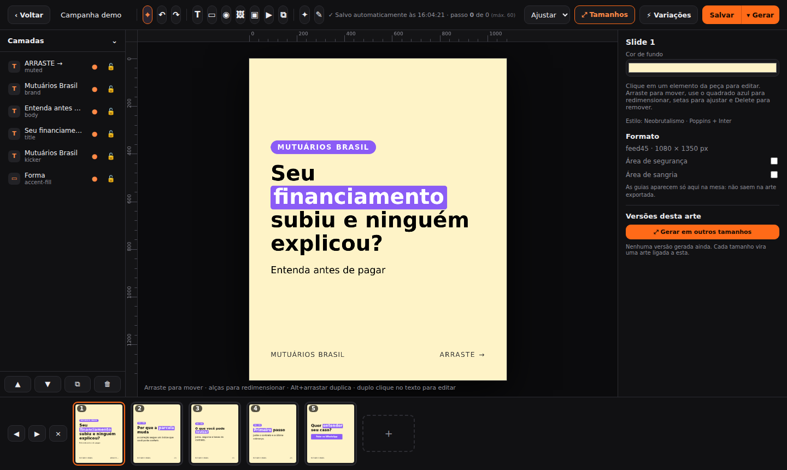
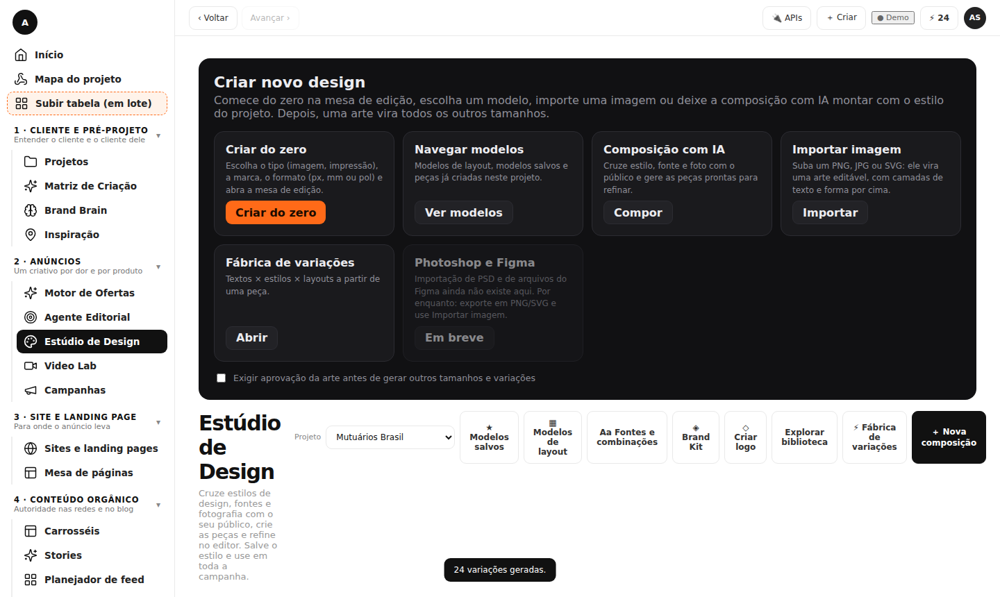
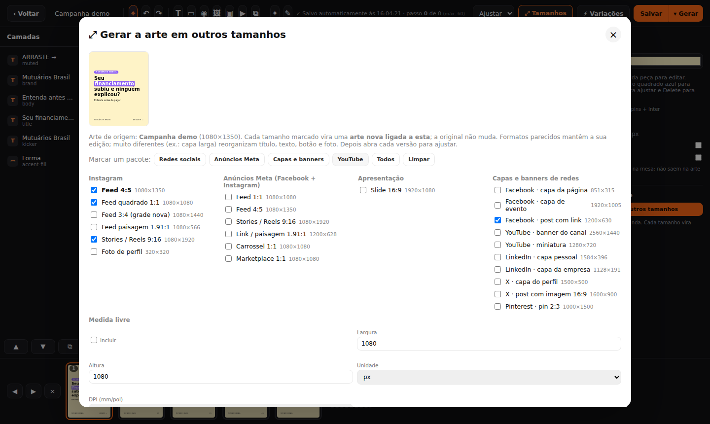
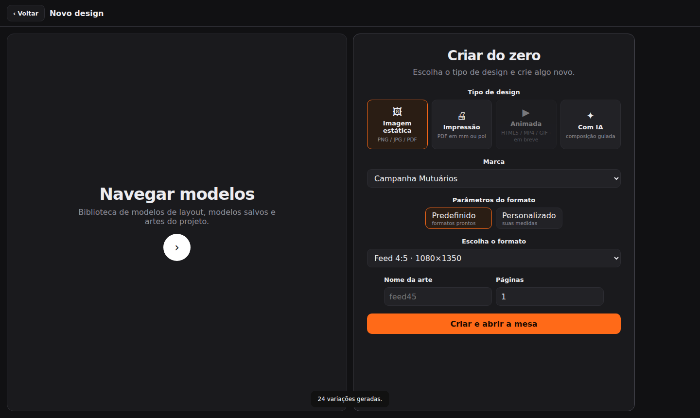
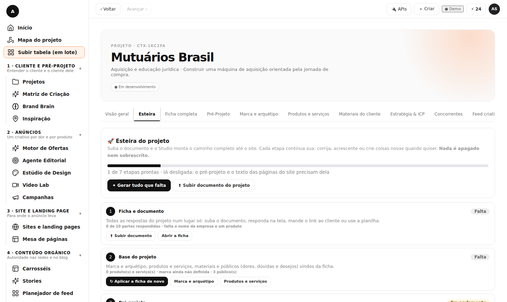
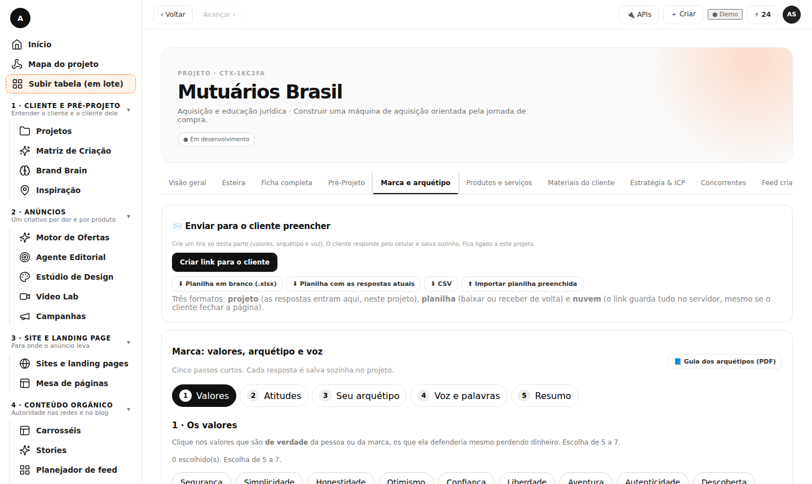
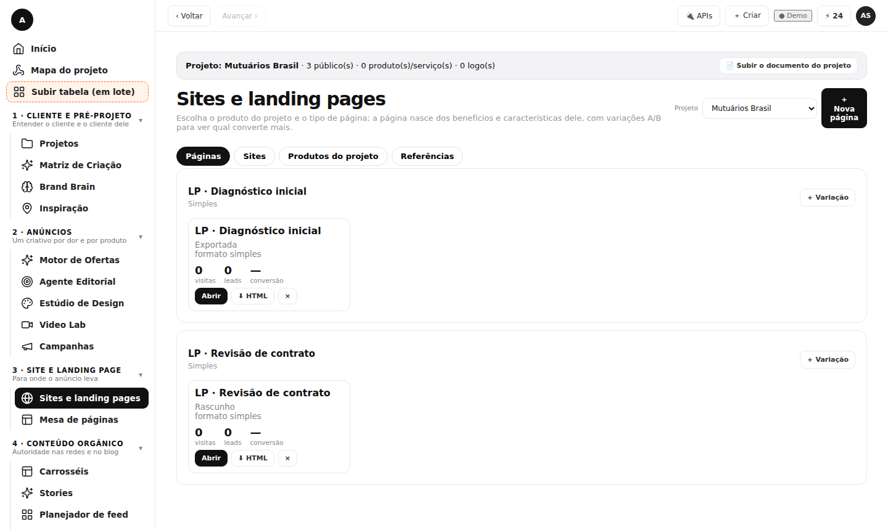

Suba o documento do projeto. O Studio monta a marca, os anúncios, os posts, os stories, o carrossel e as páginas do site, com as informações do próprio cliente. Cada etapa continua sua para corrigir e ampliar.

O documento do projeto vira o ponto de partida de tudo. Nada é inventado: o que não foi informado fica marcado como falta.
Área de trabalho parecida com as ferramentas de design que você já conhece, ligada ao seu projeto.


Depois que a primeira arte está pronta, um clique cria as outras versões, já ligadas à original.
Escolha o tipo de design, a marca e o formato. Ou navegue pelos modelos de layout e pelas artes do projeto.


Um caminho completo do documento até o site. Cada etapa mostra se está pronta ou falta algo.
Valores, atitudes, arquétipo (12), e a voz da marca. O cliente responde por um link e você recebe no projeto, em planilha ou na nuvem.


A página nasce dos benefícios e das características de cada produto, com variações A/B e exportação em HTML.
Cada peça sai com a mesma marca, o mesmo público e o mesmo texto de base.
Todas as perguntas do projeto em tela, planilha e PDF.
Textos × estilos × layouts a partir de uma peça.
Link com prazo, decisão por peça e correções.
Agende as peças aprovadas e publique pela Meta.
Métricas reais e pesos aprendidos para os próximos conceitos.
Sites e Marca também existem como módulos independentes.
HTML5, MP4 e GIF.
Hoje: exporte para PSD, PNG e SVG e importe imagens.
A demonstração abre com duplo clique, sem servidor e sem cadastro.